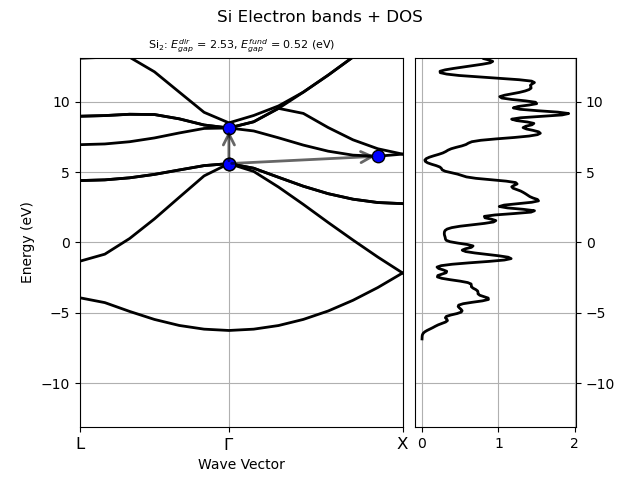

This example shows how to compute the DOS and plot a band structure with DOS using two GSR files.
Out:
nscf_ebands.efermi 5.5984532787385985
gs_ebands.efermi 5.5984532787385985
from abipy.abilab import abiopen
import abipy.data as abidata
# Open the file with energies computed on a k-path in the BZ
# and extract the band structure object.
with abiopen(abidata.ref_file("si_nscf_GSR.nc")) as nscf_file:
nscf_ebands = nscf_file.ebands
# Open the file with energies computed with a homogeneous sampling of the BZ
# and extract the band structure object.
with abiopen(abidata.ref_file("si_scf_GSR.nc")) as gs_file:
gs_ebands = gs_file.ebands
# Compute the DOS with the Gaussian method (use default values for
# the broadening and the step of the linear mesh.
edos = gs_ebands.get_edos()
# Plot bands and DOS.
nscf_ebands.plot_with_edos(edos, e0=None)
print("nscf_ebands.efermi", nscf_ebands.fermie)
print("gs_ebands.efermi", gs_ebands.fermie)
Total running time of the script: ( 0 minutes 1.353 seconds)